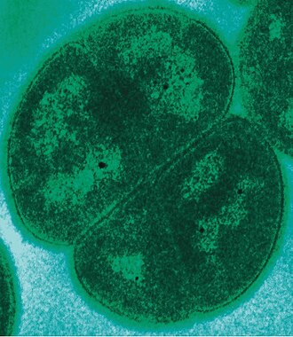
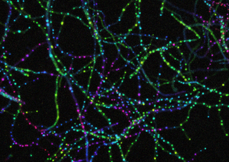

Stage 2: Designing MarsWorm
If nothing can do the job, design something that can
Stage 1 scored 322 organisms and got a flat answer: nothing on Earth both survives Mars and enriches dirt. The best single organism manages 14 of the 23 jobs, and never both halves at once.
So the organism cannot be found. It has to be assembled: take the best real gene for each of the 23 jobs, from whichever organism does that one job best, and write the result up as an order a DNA synthesis company could print.
That is this stage. It needs a laptop and public databases, and no lab at all.
Where this sits in the project
| Stage | What it answers | |
|---|---|---|
| Stage 1 | Searching Earth for MarsWorm | Is there already an organism that can do this? |
| Stage 2 | Designing MarsWorm | Nothing can, so borrow 37 real genes and design one |
| Stage 3 | Testing Biology Enriches Dirt | Can life from Earth turn Martian dirt into soil at all? |
| Stage 4 | Testing Genes Enable Survival | Does a gene really bring its ability with it? |
| Stage 5 | Building MarsWorm | 24 genes into one host, in six tested rounds |
| Stage 6 | Testing MarsWorm in Dirt | Put it in Martian dirt and find out whether anything grows |
What the job actually is
Feed an earthworm dead leaves and it gives back castings: dark, crumbly stuff that plants grow in. That is not one action. It is five.
| The worm’s job | Why soil needs it | |
|---|---|---|
| 1 | Chews dead matter into small pieces | Gives microbes more surface to work on |
| 2 | Drags waste down and brings minerals up | Puts carbon and minerals in contact |
| 3 | Burrows, leaving channels | Air, water and roots can move through |
| 4 | Leaves castings behind | Builds crumbs that hold water |
| 5 | Carries microbes in its gut | These do the actual chemistry |
Job 5 is the one people miss. The worm does not digest soil itself. Its gut microbes do. The worm is mostly a delivery vehicle, which is the first clue that the answer may not need to be a worm at all.
Now put that worm on Mars. Six things kill it, and each one is enough on its own.
| Mars | What it does to a worm |
|---|---|
| About −60 °C | Freezes it, and ice tears its cells open |
| Almost no liquid water | Dries it out; worms breathe through wet skin |
| Radiation reaching the ground | Shreds its DNA |
| Perchlorate salt in the dust | Poisons it |
| Almost no oxygen | Suffocates it |
| Almost no dead plants or animals | Nothing to eat |
Those two tables are the specification: five jobs to do, six conditions to survive.
Nothing has everything, but everything has something
Every line in both tables is already solved somewhere on Earth.
| The problem | Something on Earth already handles it | |
|---|---|---|
| Freezing | Colwellia psychrerythraea, which grows below 0 °C in Arctic sea ice | |
| Drying out | Tardigrades and brine shrimp, which lose nearly all their water and revive | |
| Radiation |  |
Deinococcus radiodurans, which takes about 1000 times a human-lethal dose |
| Perchlorate | Ideonella dechloratans, which breathes the stuff | |
| No oxygen | Clostridium acetobutylicum, which oxygen actually harms | |
| Breaking down dead plants |  |
Streptomyces coelicolor, one of the great soil decomposers |
| Nitrogen from the air | Azotobacter vinelandii, which turns air into plant food | |
| Working through sediment | Capitella teleta, which eats through mud like a marine earthworm |
No organism is on that list twice. Every one is a specialist. Deinococcus shrugs off radiation and builds no soil. Azotobacter makes plant food and would freeze solid.
The blueprint already exists. It is just scattered across the tree of life, because nowhere on Earth ever needed all of it at once.
So the question this stage answers is:
If we take the best real gene for each job and put them in one design, how close to a Mars soil-maker does that get, and what is still missing?
The design is called MarsWorm, but nothing says it has to be a worm. The name describes the job. Given Job 5, the answer is mostly microbial.
From a trait to a gene
Surviving Mars and enriching dirt is too big a thing to shop for. So it is broken down. First into 13 traits, the abilities MarsWorm needs, then into 23 jobs, each one small enough that a single protein can do it. Those 23 are what Stage 1 scored all 322 organisms against, and they are the shopping list for this stage.
You cannot search a database for a trait
The 23 jobs are written in human words. Stop ice from tearing the cell apart. Pull iron out of the dirt. Those sentences say what is needed, and they are how a person thinks about it.
UniProt, the protein database
this stage shops in, does not understand any of it. It stores proteins,
each with a name, a sequence, and notes from whoever studied it. Type a
job into the search box and you get nothing useful back. Type
toxic and it hands back snake venom.
So each job has to be translated into the database’s own words. The
job stop ice from tearing the cell apart becomes
antifreeze, ice-binding and
ice structuring. Pull iron out of the dirt becomes
ferric reductase, siderophore synthetase and
ferric uptake. Break down starch, the stuff in a
potato becomes amylase and glucoamylase.
Pull plant food out of thin air becomes one word,
nitrogenase.
Finding those words is the hard part, and no program can do it. It is
searching, reading, asking a teacher or a parent, and trying a term to
see what comes back. Sometimes the database can be asked directly.
Nobody has to already know the phrase “ice structuring”: type
antifreeze into UniProt’s keyword list and
it hands back KW-0047 Antifreeze protein, synonym Ice
structuring protein. Ask the database for its vocabulary, never
guess it.
All 45 search terms, for the 23 jobs
| Job | What is searched for |
|---|---|
| Keep working in the freezing cold | cold shock |
| Stop ice from tearing the cell apart | antifreeze, ice-binding,
ice structuring |
| Hold everything together once the water is gone | dehydrin, late embryogenesis abundant,
hydrophilin, desiccation |
| Make the sugar that protects it while dry | trehalose-phosphate synthase |
| Put a shield around the DNA | DNA protection, damage suppressor |
| Mend the DNA that gets broken anyway | radiation response, radiation resistance,
photolyase, DNA repair protein |
| Catch the first burning chemical | superoxide dismutase |
| Destroy the second one before it burns the cell | catalase, peroxiredoxin,
glutathione peroxidase |
| Break down the poison in the Mars dust | perchlorate reductase |
| Finish the poison off, and get oxygen back | chlorite dismutase |
| Make energy with no air | fumarate reductase, hydrogenase |
| Grab broken proteins before they stick together | small heat shock protein |
| Fold them back into shape | chaperone protein DnaK,
chaperone protein DnaJ |
| Catch carbon dioxide straight out of the air | ribulose-bisphosphate carboxylase |
| Keep the carbon-catching cycle turning | phosphoribulokinase |
| Chew up tough plant stalks and leaves | cellulase, cellobiohydrolase,
endoglucanase |
| Chew up fungus threads and insect shells | chitinase, chitin deacetylase |
| Pull plant food out of thin air | nitrogenase |
| Unlock phosphorus from solid rock | phytase, alkaline phosphatase,
acid phosphatase |
| Pull iron out of the dirt | ferric reductase, siderophore synthetase,
ferric uptake |
| Build a home the helpful microbes can live in | biofilm, exopolysaccharide |
| Break down starch, the stuff in a potato | amylase, glucoamylase |
| Break down fat and oil | lipase |
The rules, then the winner
The 45 terms bring back 2,108 proteins. Far too many, and most of them are no good. So they get filtered.
Five rules do the filtering, and all five were written down before the search ran. That order matters. Rules picked afterwards would just be rules that keep the proteins you already liked.
The five rules
| A protein is out if | Because |
|---|---|
| No expert has checked it | a computer’s guess is not evidence |
| It has never been seen in a lab | somebody should have held this protein |
| It is a fragment, or outside 40 to 2,000 letters | too broken to fold, or too dear to print |
| It comes from a germ or a parasite | this ends up in soil |
| It is an inhibitor | an “amylase inhibitor” blocks digestion |
The five rules throw out 601 proteins, leaving 1,507. Most jobs still have dozens of good candidates, so those are put in order by a second set of rules, and whoever comes top wins the job. One winner per job, so 23 proteins are chosen and 1,484 are not. Most of the 1,484 are perfectly good proteins. They were simply beaten by a better one for the same job.
How the winner is picked, in order
| Ranked by | Why |
|---|---|
| Which search term it matched | the first term for a job is the most exact one |
| Whether it comes from an over-studied lab organism | those genomes are searched hardest, so the match may be an accident of attention |
| How carefully it has been written up | more curation means fewer surprises |
| Length, last | hundreds tie on everything above, and the shortest entries are scraps rather than working enzymes |
Length has to come last. Let it lead and nitrogenase loses to a nitrite reductase, and alpha-amylase finishes behind a 97-letter mosquito protein.
Every one of these decisions is written down, one page per trait. Surviving the cold is one of the 13: what each term found, what was thrown out and by which rule, what won, and the ones that lost. That last part is how you check the winner beat something, rather than being the only thing in the room.
The 13 trait pages, one for each
| Trait | Genes | The whole story |
|---|---|---|
| Survival on Mars | ||
| Survive freezing | 2 | How this trait became 2 genes |
| Survive drying out | 2 | How this trait became 2 genes |
| Repair radiation damage | 2 | How this trait became 2 genes |
| Handle toxic chemicals | 2 | How this trait became 2 genes |
| Detoxify the Mars poison | 4 | How this trait became 4 genes |
| Live without oxygen | 1 | How this trait became 1 gene |
| General damage control | 2 | How this trait became 2 genes |
| Turning dirt into soil | ||
| Make food out of thin air | 2 | How this trait became 2 genes |
| Break down dead plants | 2 | How this trait became 2 genes |
| Make nitrogen fertiliser | 13 | How this trait became 13 genes |
| Unlock minerals from rock | 2 | How this trait became 2 genes |
| Team up with other microbes | 1 | How this trait became 1 gene |
| Digest food | 2 | How this trait became 2 genes |
The order
37 genes · 23 of 23 jobs · 18 organisms · 41,445 letters of DNA · roughly $2,900 to $6,200
| Trait | Genes |
|---|---|
| Survive freezing | 2: CspB, antifreeze protein |
| Survive drying out | 2: dehydrin CAS31, trehalose-phosphate synthase |
| Repair radiation damage | 2: IrrE, DNA protection during starvation |
| Handle toxic chemicals | 2: superoxide dismutase, catalase |
| Detoxify the Mars poison | 4: perchlorate reductase (3 parts), chlorite dismutase |
| Live without oxygen | 1: fumarate reductase |
| General damage control | 2: small heat shock protein, DnaK |
| Make food out of thin air | 2: RuBisCO, phosphoribulokinase |
| Break down dead plants | 2: cellulase, chitinase |
| Make nitrogen fertiliser | 13: the whole nitrogenase machine |
| Unlock minerals from rock | 2: phytase, ferric reductase |
| Team up with other microbes | 1: biofilm matrix protein |
| Digest food | 2: amylase, lipase |
One job takes 13 genes because nitrogenase is not a protein, it is a machine, and ordering one piece of it builds nothing. The parts did not have to be guessed at: each entry in the database names the partner it binds to, and which protein builds the metal cluster at its heart.
We are not buying organisms. We are buying printed
DNA. A synthesis company takes a sequence and posts you the
molecule, so the source organism never has to be grown, shipped, or even
still alive. That is why the antifreeze protein in the order comes from
 a
winter flounder.
a
winter flounder.
The full list has every gene with its job, protein, source organism and length, and the warnings on the ones we are least sure of. The same list as a spreadsheet is what a synthesis company would be handed.
Scoring the design the same way
Stage 1 asked every one of its 322 organisms the same question about each of the 23 jobs: does it have a protein that can fill this job at all? The design is put through that identical question 23 times, so the comparison is fair, and it answers yes to all of them: 13 of 13 on survival, 10 of 10 on enrichment.
The map has an Our design toggle, so you can watch the empty corner fill.
No single organism on Earth reaches that corner. A combination of real genes does.
What this design still gets wrong
A result nobody can criticise is a result nobody checked. The first three are faults this stage cannot fix, because a protein search cannot reach them, and Stage 5 answers each one in italics.
- This search cannot choose a host. Nothing in a protein record says whether an organism breathes oxygen, lives in soil, or can be engineered. Those are facts about organisms, and this method searches proteins. Stage 5 chose Azotobacter vinelandii, which already carries 13 of the 37 genes.
- These are protein-coding sequences only. A gene
also needs a switch telling the cell to read it, and nothing here picks
one. Stage 5 uses the host’s own
nifHswitch, and that choice is one of the three questions the design review asks about. - Oxygen destroys the nitrogenase in seconds, and 6 of the ordered genes carry that warning. Worse, the perchlorate genes release oxygen: one trait makes the gas another trait cannot be near, which only became visible once both traits existed. Stage 5’s answer is that the chosen host is itself an oxygen sink. Nobody has ever tried it, so it is tested at round 3 of 6, before anything expensive depends on it.
- 35% of the order is one trait. 13 of the 37 genes are nitrogenase. That is the biology rather than a mistake, but it is a large bet on one job.
- Twenty-three jobs is a judgement, not a measurement. A person decided where to cut each of the 13 traits into steps. Surviving the cold was cut into two jobs. Fixing nitrogen was left as one. Every cut has a reason, but nothing in the biology says 23 is the right number. Cut them differently and every score on this page changes.